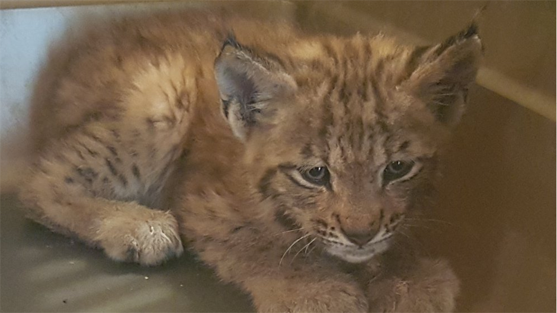
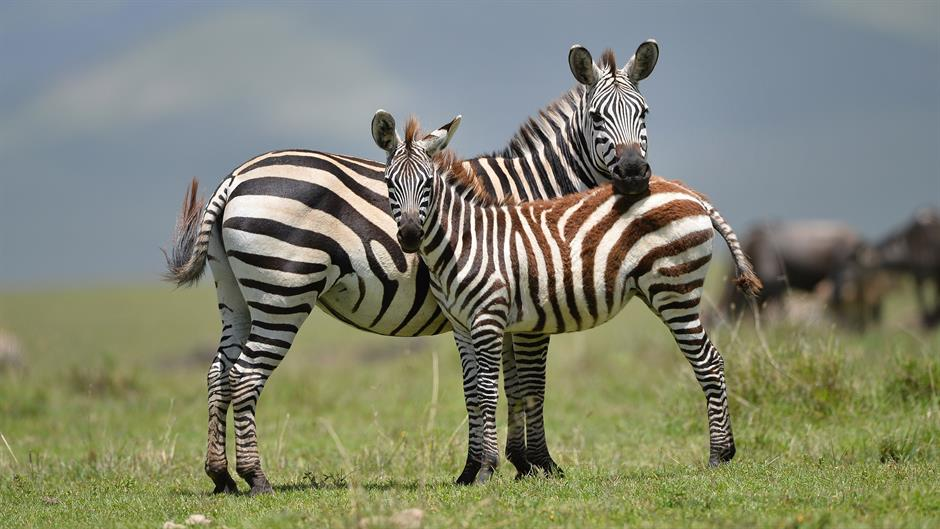

Novosti

U zadnje 44 godine nestalo 60 posto divljih životinja
Bioraznolikost na Zemlji u posljednjih nekoliko desetljeća prolazi kroz stalno, gotovo kataklizmičko uništenje. Više ...

U Nizozemskoj tjeraju jelene lavljim izmetom
Zandvoort, grad na obali Sjevernog mora, zapadno od Amsterdama, odlučio je pomoću spreja koji vonja po lavljem izmetu držati jelene na pristojnoj udaljenosti jer nerijetko ulaze u vrtove i čine štetu. Više ...

Povijesni uspjeh: Ris Martin proslavio rođendan u divljini
Martin danas punim plućima uživa u životu u Gorskom kotaru. Međutim, lani njegova situacija nije izgledala baš dobro. Više ...
Bijeg divljih životinja iz zoološkog vrta bila lažna uzbuna
Životinje za koje se mislilo da su pobjegle iz zoološkog vrta u zapadnoj Njemačkoj, među kojima dva lava, dva tigra i jaguar, zapravo uopće nisu napustile svoje nastambe, a čuvarima su nestale iz vida zbog poplava uslijed nedavne oluje. Više ...

Najveća seoba životinja u Africi uranila zbog manjka kiše
Nedostatak kišnih padlina "natjerao" je divlje životinje u Africi na prijevremenu selidbu prema Serengetiju, u pograničnom pojasu između Tanzanije i Kenije. Više ...